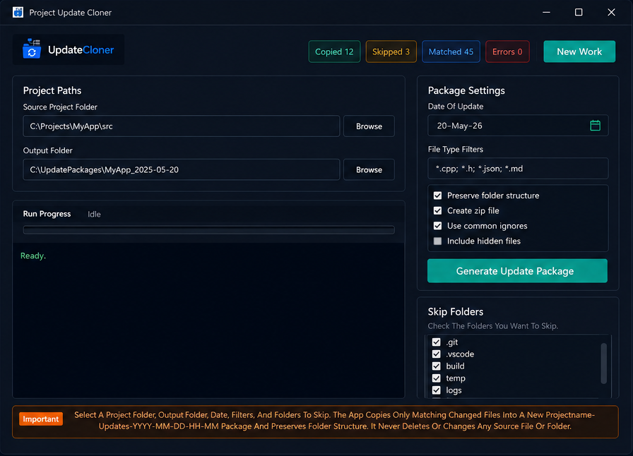

Date-aware selection
Choose a modified date and collect only the files that belong in that release package.
Project Update Cloner builds clean update bundles from a selected date, keeps the original folder structure, filters noisy directories, and can export a ZIP with a readable update log.
Currently supports Windows 11 only.

Features
Choose a modified date and collect only the files that belong in that release package.
Relative paths stay intact, so update bundles mirror the source project.
Ignore folders like `.git`, `node_modules`, `bin`, `obj`, and logs.
Limit output with patterns such as `*.php`, `*.js`, or `*.css`.
Package the update as a ZIP and include `update-log.txt` for traceability.
Locked or inaccessible files are recorded per file instead of silently failing.
Workflow
Best fit
Project Update Cloner is useful when you need to share changed files locally every day, especially for projects that are not using GitHub Actions, CI/CD, or automated release workflows yet.
Package only the files changed on a selected date and share the update folder or ZIP with another machine or teammate.
Useful for daily project changes where copying the full project is slow, noisy, or too easy to review incorrectly.
For larger teams, automated builds, testing, and deployments, GitHub with CI/CD is the better long-term workflow.
Explore GitHub ActionsWindows app
The installer script sets up the app for the current Windows user and creates Desktop and Start Menu shortcuts.
Windows 11 is the only supported operating system for now.
FAQ
No. It only collects files modified on the selected date, then preserves their original relative folder paths in the output package.
Yes. You can skip common folders such as `.git`, `node_modules`, `bin`, `obj`, `vendor`, and other project folders that should not ship.
Yes. Use file filters like `*.php`, `*.js`, `*.css`, or any other pattern that matches the files you want to include.
Yes. ZIP export is optional, so you can keep the generated folder as-is or package it into a ZIP for delivery.
The app logs inaccessible or locked files per file, so you can review what failed instead of silently missing important updates.
The current app and installer are built for Windows 11, with Desktop and Start Menu shortcut support for the current user.